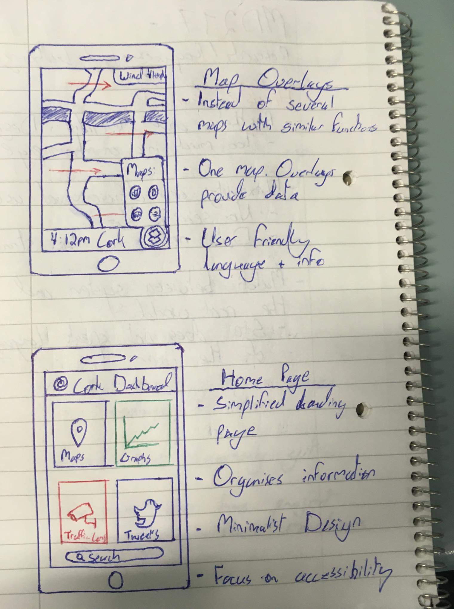
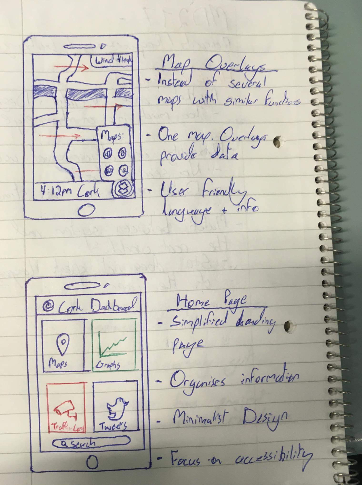

Cork Dashboard - reimagining a user interface
This project consisted of evaluating Cork Dashboard's current user experience, identifying issues and developing efficent solutions.

Cork Dashboard Re-Imagined UI
The features and overall design of our mobile app are a proposed solution to the issues we found in the Cork Dashboard during our heuristic evaluation. Keeping the user at the center of every decision made was key in the creation of this app.
The screens have been drastically simplified, reducing the cognitive overload a user was presented with in the current site. The available information has been organised into four main categories. The idea is that all the same information is still available, however, the user can navigate to what is actually relevant to them.
Early Stage Sketches
 

When designing user interfaces, it is important to sketch out quick ideas. Brainstorming several possible solutions to one problem is an approach that is more likely to find the most effective design choice. Creating low-fidelity wireframes is an essential step to take before creating high-fidelity designs. This allows for discussion between stages and creates room for new ideas to be generated.